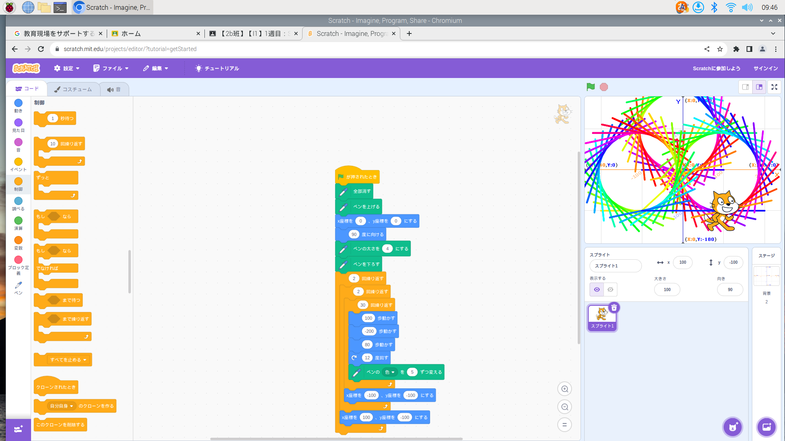
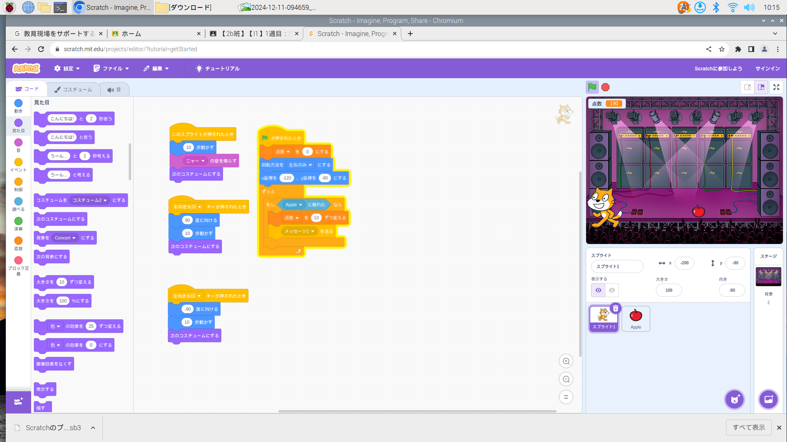

1週目のレポート ： 公大高専１年実習I-1
2b班30番 前岡伸太郎/div>
第1週目
1-1 サイエンスアート

1.内容
スクラッチを使って線を書くプログラムを学んだ。スクラッチでは自分の意志に沿って軌跡を描くようにブロックを組んでいく方法を使って円と円に接する接線を書いた。
2.感想
はじめは先生の指示どうりにブロックを組んでいたためとくに難しいと感じることはなかったが、いざ自分で好きな軌跡を描くとなるとどうブロックを組んでいいかわからず難しかった。
1-2 ゲーム

1.内容
スクラッチを用いて落ちてくるりんごを拾うゲームをつくった。ゲームを自分なりに強化するとき、りんご以外に鈴も落ちてくるようにした。
2.感想
感覚的な操作でプログラムをくむことができたので、とても理解しやすかった。
1-3 ホームページ作成
私のホームページ
1.内容
githubに作ったアカウントを用いてホームページを作成した。
2.感想
何がどうなっているのか全然わからなくて自分には難しかった。
各ページへのリンク
1週目のレポート
2週目のレポート
3週目のレポート
私のホームページ